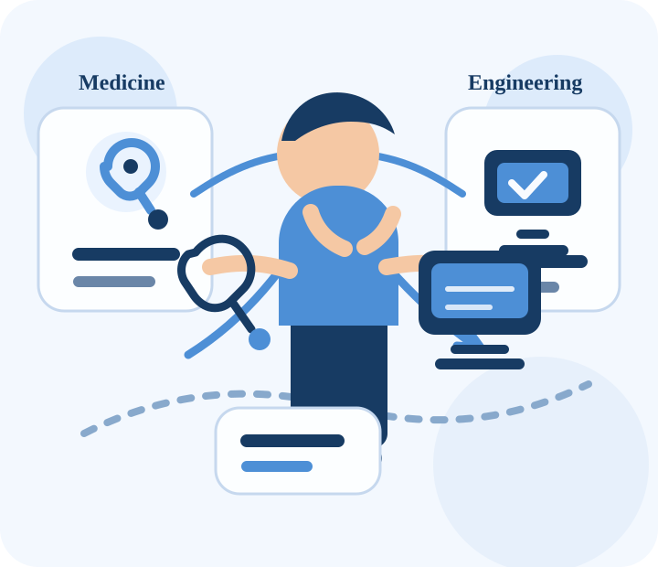

One result can redirect a future, but it does not reduce it.
Missing a path by a small margin can still become the beginning of a better one when the response is honest, strategic, and disciplined.
Ali Nazir | Personal Website + Weekly Blog
This website is built around a real academic transition. It keeps the homepage clear and static, while the blog records weekly lessons about resilience, study discipline, and taking computer engineering seriously.
Missing a path by a small margin can still become the beginning of a better one when the response is honest, strategic, and disciplined.

Dream, setback, reset, commitment, and long-term engineering growth.
Faisalabad Campus
Current academic home for my computer engineering journey and the next stage of my long-term growth.
Journey
The original ambition was medicine, and preparation demanded full attention. That intensity built discipline, but it also made everything feel dependent on one outcome.
Missing admission by a very small margin brought frustration, comparison, and a difficult emotional reset. It also forced a more realistic view of the future.
Computer engineering becomes meaningful when it is chosen with intention, backed by skill-building, practical work, and a forward-looking mindset.
Blog

A reflection on intense MDCAT preparation, the emotional weight of a near miss, and the decision to stop treating computer engineering like a backup plan.